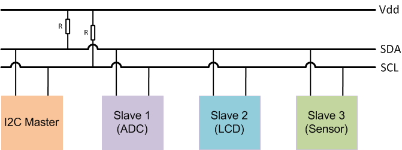
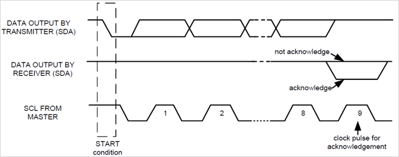

Support I2C Communication
I2C, also known as Inter-Integrated Circuit, is a synchronous, chip-to-chip protocol for communication in integrated circuits and low speed peripherals. Some of the common I2C based devices include EEPROM, thermal sensors, and real-time clocks. The I2C Master Write block and I2C Master Read block enables communication with I2C devices.
The I2C bus on the device has an I2C Master that is connected to two bidirectional lines, Serial Data Line (SDA) and Serial Clock Line (SCL). These two lines are connected to a pair of pins on the attached I2C slave device. The I2C slave device has a unique 7-bit or 10-bit address that is provided by the manufacturer. If the address is not unique, refer to the device data sheet to reconfigure the address.
The master node generates a clock and initiates a communication with the slave device. The slave node receives the clock and responds with an acknowledgment to the I2C master.
I2C uses the following communication modes:
Master Transmit: I2C master WRITES data to I2C slave
Master Receive: I2C master READS data from I2C slave
Slave Transmit: I2C slave WRITES data to I2C master
Slave Receive: I2C slave READS data from I2C master

Start and Stop Conditions
An I2C message consists of a START bit, the data to transmitted and a STOP bit.
An SDA going from HIGH to LOW with the SCL still at HIGH indicates a START condition. The SDA going from LOW to HIGH with the SCL held at HIGH indicates a STOP condition. All other SDA transitions take place with SCL at low.
Data Acknowledgment
I2C communication defines the data bytes to be 8-bit long. I2C can transmit data of single byte or multiple bytes. During the data transmission, an acknowledge ACK signal follows every byte. A clock for ACK is generated by the master, while the receiver (master or slave) generates the ACK by pulling down the SDA and holding it to LOW during the high portion of the acknowledge clock pulse.
If the SDA is not pulled LOW during the acknowledge period, it indicates NACK (Not Acknowledge) by the receiver. If slave is not ready for transmit or receive of next data byte, it holds SCL LOW making the master enter a WAIT state. Once the slave is ready and releases the SCL, the normal data transfer resumes.

I2C Read/Write
The I2C read/write operation takes place as follows:
The I2C master initiates the communication by sending a START condition followed by a 7-bit slave address and the 8th bit to indicate write (0)/ read (1)).
The master releases the SDA and waits for an ACK from the slave device.
If the slave exists on the bus, it responds with an ACK.
The master continues in either transmit or receive mode (according to the read or write bit it sent), and the slave continues in its complementary mode (receive or transmit, respectively).
The master terminates the data transmission by sending a STOP condition.
The following image shows a single byte read and write on an I2C slave device.
I2C Register Read/Write
The I2C register read/write operation takes place as follows:
The I2C master initiates the communication by sending a START condition followed by a 7-bit slave address and the 8th bit to indicate write (0)/ read (1).
The master releases the SDA and waits for an ACK from slave device.
If the slave exists on the bus, it responds with an ACK.
Then, the master writes the register address of the slave it wants to access.
Once the slave acknowledges the register address, the master sends the data byte with an ACK after each byte for write/read.
The master terminates the data transmission by sending a STOP condition.
The following image shows a single byte read and write on a register present in the I2C slave device.